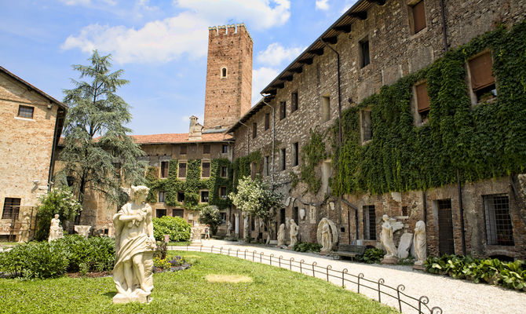

SENTIERI NATURALISTICI A BASSANO DEL GRAPPA
Nei pressi di Bassano del Grappa si estende una rete di sentieri naturalistici, storici e artistici e dato il tema su cui ci siamo focalizzati per questo lavoro abbiamo deciso di mettere in risalto il sentiero naturalistico “anello del Brenta”. Nella prima parte troviamo un salice e una spiaggetta di sassi chiamata anche “spiaggetta di Angarano” o “le cascatelle”, che segna l’inizio del percorso. Camminando è importante fare attenzione alla biodiversità delle rive del Brenta: in particolare il primo tratto si distingue per le numerose specie della fauna ittica tra cui trote iridee, fario, trote marmorate, temoli salmerini e altre ancora. Carattere di rilevanza è anche la diversificazione delle specie di uccelli: anatre, germani reali, aironi cenerini, garzette, martin pescatori, merli acquaioli…nelle sponde del fiume inoltre si può distinguere una grande varietà di piante spontanee.
TEATRO OLIMPICO
Il teatro olimpico è l’ultima opera architettonica realizzata da Andrea Palladio tra il 1580 e il 1585. Fu commissionato dall’Accademia Olimpica come primo teatro stabile dell’età moderna.

L’architetto si ispirò alla struttura del teatro romano con la differenza che essendo un edificio chiuso, fece affrescare il soffitto con un cielo nuvoloso per richiamare i teatri classici. La suggestiva scena fissa è stata realizzata in legno e stucco e riproduce la facciata di un edificio classico corinzio, adorno di statue e rilievi. I fondali rappresentati nelle tre aperture della scena mostrano un crocevia di strade su cui si affacciano ricche facciate di edifici.
GOETHE IN VICENZA
Goethe, unzufrieden mit seinem Hofleben, begann 1786 eine 2 Jahre lang Reise nach Italien. Zwischen den vielen italienischen Städten, hat er von 19. bis 25. September in Vicenza übernachtet. Dort war er begeistert von den Architekturen von Andrea Palladio, der die Ideen eines strengen klassizistischen Ideals vertrat und die Baukunst des antiken Roms als Vorbild für sich betrachtete. In seinem Tagebuch schreibt Goethe:
"Vor einigen Stunden bin ich hier [in Vicenza] angekommen, habe schon die Stadt durchlaufen, das Olympische Theater und die Gebäude des Palladio gesehen. Man hat ein sehr artiges Büchelchen mit Kupfern zur Bequemlichkeit der Fremden herausgegeben mit einem kunstverständigen Texte. Wenn man nun diese Werke gegenwärtig sieht, so erkennt man erst den großen Wert derselben; denn sie sollen ja durch ihre wirkliche Größe und Körperlichkeit das Auge füllen und durch die schöne Harmonie ihrer Dimensionen nicht nur in abstrakten Aufrissen, sondern mit dem ganzen perspektivischen Vordringen und Zurückweichen den Geist befriedigen; und so sag' ich vom Palladio: er ist ein recht innerlich und von innen heraus großer Mensch gewesen."
Während seines venetischen Aufenthaltes hat Goethe auch die palladianischen Villen besichtigt und wir wissen, dass die Villa Almerico Capri seine Liebling war, auch als La Rotonda bekannt.